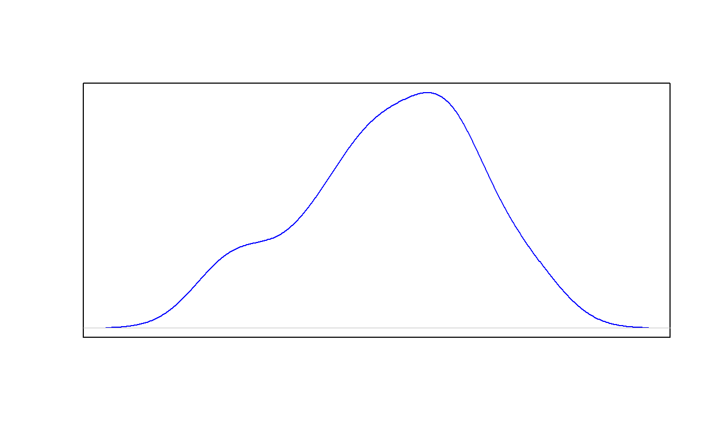
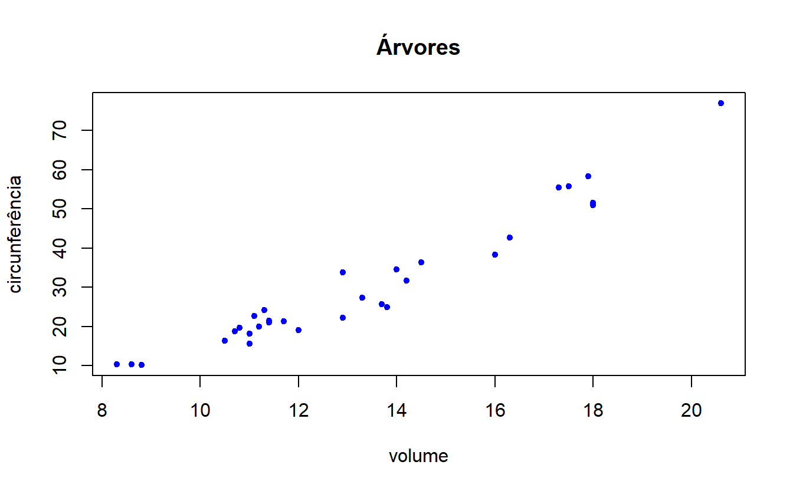
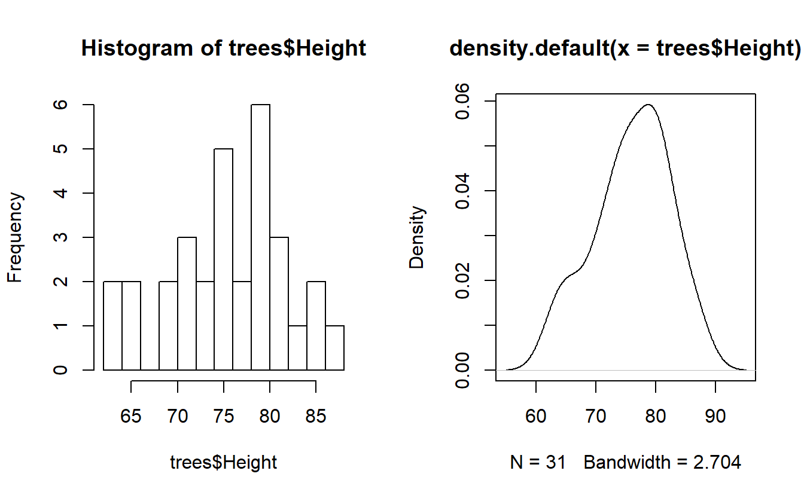
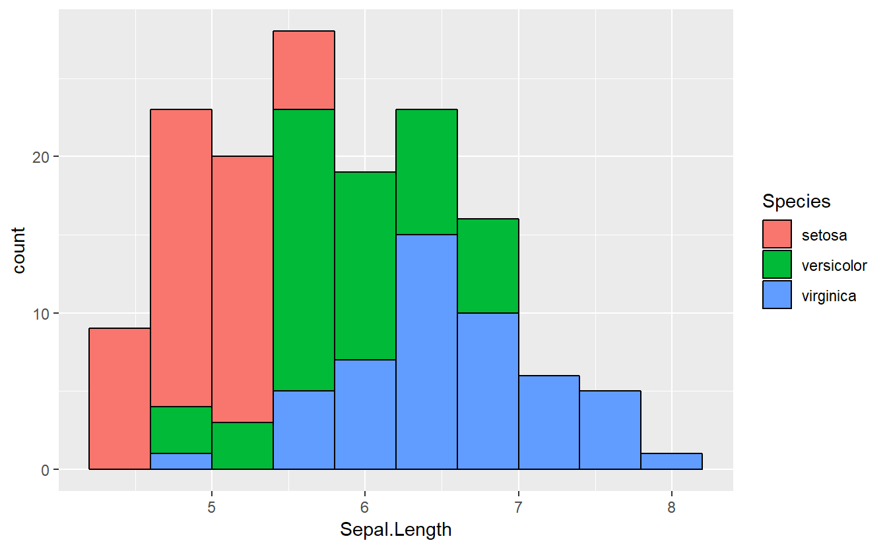
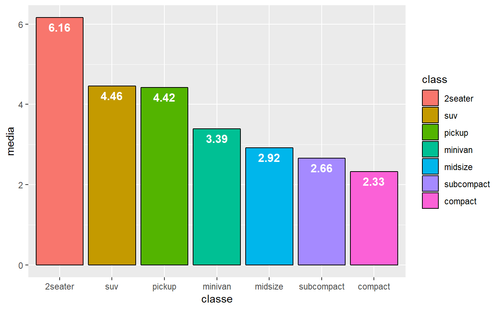
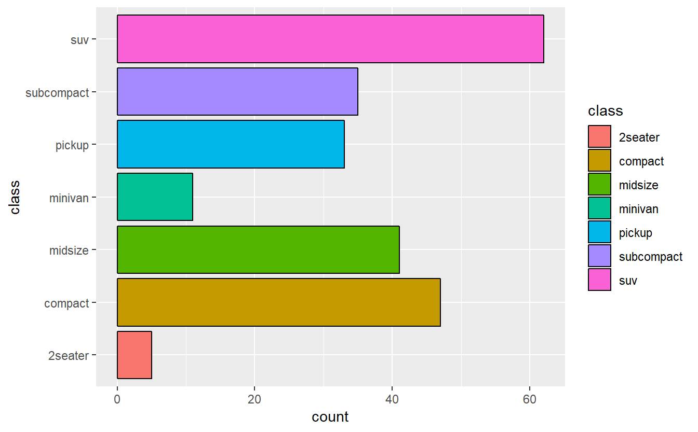
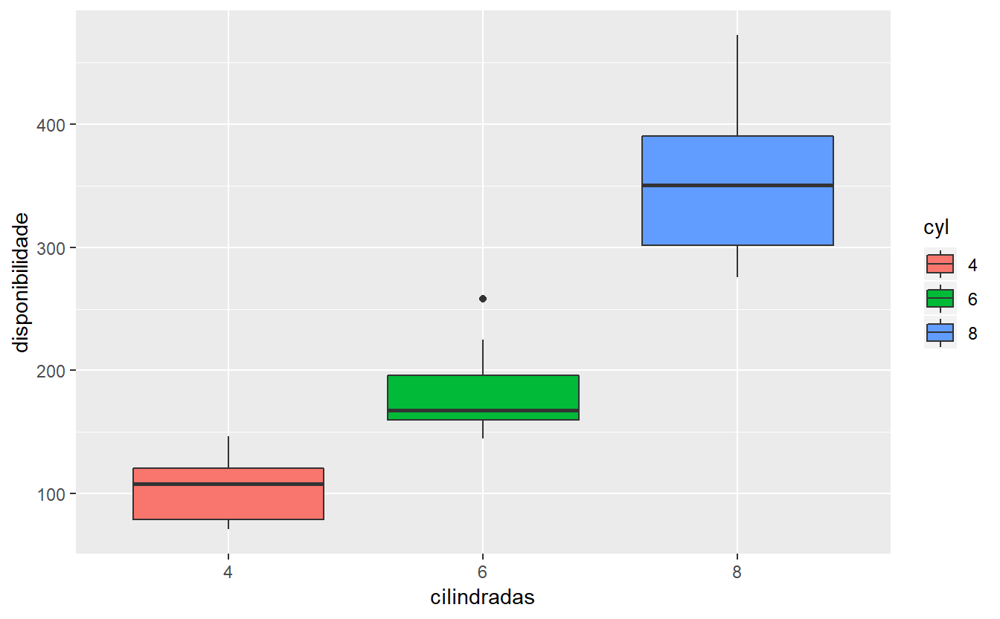

R Basics
This is just a sneak peek on forthcoming weeks. Here I’ll post the PT-BR version of the first pages of a R crash course that, hopefully, will help you out to start your career as a data scientist. Enjoy:
Native graph functions: Gráficos de funções nativas
Este capítulo apresentará algumas ferramentas nativas em R responsáveis pela exibição gráfica de alguns conjuntos de dados. Estatística descritiva e a escolha da maneira correta de apresentar os dados são de grande importância para um cientista de dados. Em outros capítulos, serão apresentadas outras maneiras de se criar exibições gráficas mais detalhadas e com outras opções, com pacotes que não são nativos do R.
Histogramas
O dataset trees traz informações sobre algumas árvores. Observando um resumo básico deste dataset, temos:
## Girth Height Volume
## Min. : 8.30 Min. :63 Min. :10.20
## 1st Qu.:11.05 1st Qu.:72 1st Qu.:19.40
## Median :12.90 Median :76 Median :24.20
## Mean :13.25 Mean :76 Mean :30.17
## 3rd Qu.:15.25 3rd Qu.:80 3rd Qu.:37.30
## Max. :20.60 Max. :87 Max. :77.00A coluna Girth informa o calibre de um tronco, enquanto que Heightapresenta a altura da árvore. Por fim, Volume informa, provavelmente em metros cúbicos, a capacidade tridimensional de ocupação da madeira daquela árvore. Apresentaremos agora a representação do dataframe trees em forma de histograma:
#histograma da altura das ?rvores com 10 caixinhas de intervalo
histograma <- hist(trees$Height,breaks=10)Esta visualização é muito simplificada e pode ser melhorada. Por exemplo, os componentes do histograma poderiam ser azuis e vazados, e os eixos poderiam trazer alguma informação significativa acerca das dimensões examinadas. Também é possível, como visto abaixo, criar um título para o gráfico:
#complementando a estética do histograma anterior
plot(histograma,col="blue",density=40,
main="Árvores", ylab="Frequência",xlab="Altura")
Densidade
Ainda tomando como base o exemplo anterior, é possível que se deseje conhecer a curva que descreve a distribuição de densidade das alturas das árvores no dataset. Isso é possível através da função density().
#densidade das alturas, representadas por uma linha azul
densidade <- density(trees$Height)
plot(densidade,col="blue")Sobreposição
Em uma situação em que seja necessário se comparar mais de uma representação, o recurso de sobreposição é indispensável. Tomemos como exemplo o caso anterior, que foi representado tanto em um gráfico de histograma quanto por um gráfico de densidade. Em R, é possível sobrepor as duas exibições utilizando a função par().
#sobreposição das informações (histograma como primeira camada)
plot(histograma,col="red",density=40,
main="Árvores", ylab="Frequência",xlab="Altura")
par(new=TRUE)
#apagando as legendas e o título do gráfico de densidade
plot(densidade,col="blue",xaxt='n',yaxt='n',ann=FALSE)
Gráfico de dispersão
O gráfico de pontos, ou dispersão, pode ser usado para melhor representar as observações em duas dimensões. Esse recurso permite enxergar possíveis tendências, correlações e a sua magnitude. No R, a função plot() pode exercer nativamente esse papel, juntamente com alguns argumentos extras:
#gráfico de dispersão do calibre das árvores versus volume
plot(trees$Girth,trees$Volume,
main="Árvores",ylab="circunferência",xlab="volume",col="blue",
pch=20)
Para uma visão geral do dataset trees, o gráfico de dispersão também é muito útil, pois é possível enxergar a correlação de todas as variáveis com elas mesmas, em um grid amplo, utilizando a função plot() sem nenhum argumento, além do dataset em questão:
#plotando todas as correlações de todas as variáveis de uma só vez
plot(trees)
Também é possível dividir a tela em quantos espaços forem necessários, para uma exibição de diferentes tipos de gráficos:
#dividindo a tela para os gráficos que lhe interessam (nesse caso, dois)
split.screen(figs=c(1,2))## [1] 1 2#escolhendo o gráfico para a seção 1 da tela (nesse caso, o histograma)
screen(1)
plot(histograma)
#escolhendo o gráfico para a seção 2 da tela (nesse caso, gráfico de densidade)
screen(2)
plot(densidade)Boxplot
Uma outra representação de dados agregados muito utilizada é o boxplot. Com ele, é possível visualizar não apenas a distribuição dos dados, mas também a tendência de centralidade e a existência ou não de outliers no dataset.
#boxplot com visualizaÇão geral mais amigável de todo o conteúdo
boxplot(trees,horizontal=TRUE)
Gráfico de barras
Para a exibição em barras, é necessário que se agregue os dados de uma forma específica. Tomemos como exemplo o dataset pop, que pode ser visualizado de maneira geral abaixo:
#criação de um dataframe chamado pop
pop <- as.data.frame(matrix(c(13,45,9,17,17,21,"A","B","A","C","A","B"),
ncol=2,nrow=6))
colnames(pop) <- c("quantidade","cidade")
pop## quantidade cidade
## 1 13 A
## 2 45 B
## 3 9 A
## 4 17 C
## 5 17 A
## 6 21 B#gráfico de barras de habitantes por cidade (com agregação dos dados)
hab <- aggregate(. ~cidade,data=pop,sum)
#criação do gráfico de barras e encapsulamento por box()
barplot(hab$quantidade,col=gray.colors(3),xlab="cidade",ylab="total",
names.arg=hab$cidade)
box()
Gráfico de setores
Também conhecido informalmente como “gráfico de pizza”, pode ser facilmente plotado em R através da seguinte função, juntamente com uma legenda:
#gráfico de setores (usando os dados agregados)
pie(hab$quantidade,main="Cidades",col=c(4:6),labels=NA)
#legenda
legend("bottomright",legend=hab$cidade,cex=1,fill=c(4:6))
ggplot
As funções nativas do R são muito versáteis e conseguem cobrir muitas necessidades de um analista de dados. Contudo, há também uma abordagem diferente, através do pacote ggplot2. Este pacote pode ser facilmente encontrado, instalado e carregado:
install.packages("ggplot2")
library(ggplot2)A vantagem desse pacote é que ele possibilita a construção dos gráficos em sete diferentes camadas, com dependência entre elas: a segunda só pode ser construida se existir a primeira, a terceira só pode ser construida se existir a segunda, e assim por diante.
A primeira camada é responsável pelo conteúdo dos dados, enquanto que a segunda diz respeito à primeira etapa de visualização (escala) do gráfico. A terceira descreve a geometria de como os dados serão apresentados, ao passo que a quarta camada possibilita a visualização de várias facetas diferentes do mesmo dataset. A quinta camada possibilita a análise estatística, a sexta delimita as regiões relevantes das coordenadas do gráfico e, por fim, a sétima camada apresenta o tema geral do trabalho. Todas essas etapas poderão ser vistas nos exemplos seguintes.
Histograma
Utilizaremos o dataset nativo iris, que contém informações sobre flores.
#carregando a base de dados dentro de um dataframe
iris <- iris
#resumo dos tipos de variáveis
str(iris)## 'data.frame': 150 obs. of 5 variables:
## $ Sepal.Length: num 5.1 4.9 4.7 4.6 5 5.4 4.6 5 4.4 4.9 ...
## $ Sepal.Width : num 3.5 3 3.2 3.1 3.6 3.9 3.4 3.4 2.9 3.1 ...
## $ Petal.Length: num 1.4 1.4 1.3 1.5 1.4 1.7 1.4 1.5 1.4 1.5 ...
## $ Petal.Width : num 0.2 0.2 0.2 0.2 0.2 0.4 0.3 0.2 0.2 0.1 ...
## $ Species : Factor w/ 3 levels "setosa","versicolor",..: 1 1 1 1 1 1 1 1 1 1 ...#sumário das entradas na base de dados
summary(iris)## Sepal.Length Sepal.Width Petal.Length Petal.Width
## Min. :4.300 Min. :2.000 Min. :1.000 Min. :0.100
## 1st Qu.:5.100 1st Qu.:2.800 1st Qu.:1.600 1st Qu.:0.300
## Median :5.800 Median :3.000 Median :4.350 Median :1.300
## Mean :5.843 Mean :3.057 Mean :3.758 Mean :1.199
## 3rd Qu.:6.400 3rd Qu.:3.300 3rd Qu.:5.100 3rd Qu.:1.800
## Max. :7.900 Max. :4.400 Max. :6.900 Max. :2.500
## Species
## setosa :50
## versicolor:50
## virginica :50
##
##
## O ggplot2 funciona com a adição de funções responsáveis pelas camadas. Exibiremos agora informações simples sobre o tamanho das sépalas das flores em histograma.
#visualizando os dados das flores em 10 bins vermelhos
ggplot(data=iris,aes(x=Sepal.Length)) +
geom_histogram(color="black",fill="red",bins=10)
A função ggplot() indica ao R qual o dataset utilizado e qual trecho do dataset será plotado. A função geom_histogram() traz a informação de que será utilizado um histograma, e nesse exemplo os bins são de cor preta com preenchimento vermelho e a quantidade escolhida foi de 10.
Contudo, se houvesse a necessidade de se colorir cada um dos bins de acordo com a proporção da quantidade de espécies em cada m deles, as especificações podem ser ajustadas dentro da função aes(), dentro de ggplot().
ggplot(data=iris,aes(x=Sepal.Length,color=Species,fill=Species)) +
geom_histogram(color="black",bins=10)
Densidade
Também é possível visualizar a distribuição de densidade dos dados através da função geom_density(). No exemplo seguinte, continuaremos a observar a distribuição de densidade do tamanho das sépalas, porém em uma distribuição de densidade por espécies, em curvas de contorno preto e preenchimento de 70% das cores relacionadas às espécies. Também é possível editar as legendas e os títulos do gráfico, com a função labs():
ggplot(data=iris,aes(x=Sepal.Length,color=Species,fill=Species)) +
geom_density(color="black", alpha = 0.7) +
labs(title="Curva de densidade",x="Tamanho das sépalas",y="Densidade")
Gráfico de barras
Para a análise com gráfico de barras, utilizaremos a função geom_bar(). Exibiremos o dataset mpg, que contém dados referentes a vários tipos de carros.
mpg <- mpg
str(mpg)## Classes 'tbl_df', 'tbl' and 'data.frame': 234 obs. of 11 variables:
## $ manufacturer: chr "audi" "audi" "audi" "audi" ...
## $ model : chr "a4" "a4" "a4" "a4" ...
## $ displ : num 1.8 1.8 2 2 2.8 2.8 3.1 1.8 1.8 2 ...
## $ year : int 1999 1999 2008 2008 1999 1999 2008 1999 1999 2008 ...
## $ cyl : int 4 4 4 4 6 6 6 4 4 4 ...
## $ trans : chr "auto(l5)" "manual(m5)" "manual(m6)" "auto(av)" ...
## $ drv : chr "f" "f" "f" "f" ...
## $ cty : int 18 21 20 21 16 18 18 18 16 20 ...
## $ hwy : int 29 29 31 30 26 26 27 26 25 28 ...
## $ fl : chr "p" "p" "p" "p" ...
## $ class : chr "compact" "compact" "compact" "compact" ...summary(mpg)## manufacturer model displ year
## Length:234 Length:234 Min. :1.600 Min. :1999
## Class :character Class :character 1st Qu.:2.400 1st Qu.:1999
## Mode :character Mode :character Median :3.300 Median :2004
## Mean :3.472 Mean :2004
## 3rd Qu.:4.600 3rd Qu.:2008
## Max. :7.000 Max. :2008
## cyl trans drv cty
## Min. :4.000 Length:234 Length:234 Min. : 9.00
## 1st Qu.:4.000 Class :character Class :character 1st Qu.:14.00
## Median :6.000 Mode :character Mode :character Median :17.00
## Mean :5.889 Mean :16.86
## 3rd Qu.:8.000 3rd Qu.:19.00
## Max. :8.000 Max. :35.00
## hwy fl class
## Min. :12.00 Length:234 Length:234
## 1st Qu.:18.00 Class :character Class :character
## Median :24.00 Mode :character Mode :character
## Mean :23.44
## 3rd Qu.:27.00
## Max. :44.00Os argumentos dessa função para exibição de gráfico de barras fazem referência ao tipo de estatística exibida (que será tratado mais adiante) e ao contorno das barras. A função coord_flip() rotaciona em 90 graus a exibição das barras, para o eixo horizontal.
#gráfico de barras para MPG
ggplot(data=mpg,aes(x=class,color=class,fill=class)) +
geom_bar(color="black") + coord_flip()Para a exibição em gráfico de barras dos dados de acordo com uma variável categórica, é necessário primeiramente a criação de um dataframe novo, que será chamado de df. Nele, será armazendo o valor da média da grandeza displ (“disponibilidade”, em tradução livre) de cada um dos modelos de carros. Para tanto, será carregado o pacote tidyverse, explicado em outro capítulo em mais detalhes.
library(tidyverse)Com este pacote, é possível fazer uso não apenas de funções que auxiliam na criação de novas colunas e variáveis baseadas em valores já existentes, mas também do operador %>%, ou pipeline. A utilização deste operador é explicada em detalhes em outro capítulo.
#ordenando por uma variável categórica
df <- mpg %>% group_by(class) %>% dplyr::summarise(mean=mean(displ)) %>%
arrange(-mean) %>% mutate(class = factor(class,levels=class))No código, o dataframe df foi criado, tendo como base o dataframe anterior mpg. Agrupou-se por classe de carro através da função group_by() e aplicou-se a função summarise() do pacote dplyr (componente do tidyverse) na variável displ do dataset mpg. Mais especificamente, criou-se aí a variável mean responsável por trazer a informação da média de cada classe agrupada, através da função mean(). Em seguida, ordenou-se da menor para a maior com a função arrange() e o operador lógico -. Por fim, a função mutate()foi aplicada para a criação de mais uma variável no dataset df: a variável que continha os nomes dos tipos de carros ordenados pelos fatores da variável class do dataset mpg. O dataset pode ser visualizado a seguir:
df## # A tibble: 7 x 2
## class mean
## <fct> <dbl>
## 1 2seater 6.16
## 2 suv 4.46
## 3 pickup 4.42
## 4 minivan 3.39
## 5 midsize 2.92
## 6 subcompact 2.66
## 7 compact 2.33A partir desse ponto, é possível exibir os dados anteriores em um gráfico. O dataset será o df, no eixo X será exibido class e no eixo Y mean. As cores serão ajustadas de acordo com as classes de carro, tal como o preenchimento. A partir disso, os argumentos da função geom_bar() dizem respeito à natureza estatística da exibição e da cor do contorno das barras. Também será adicionado uma função para o título do eixo X e outra para o eixo Y. Por fim, a função geom_text() será responsável pelo ajuste estético da quantidade de casas decimais exibidas, da altura dos valores dentro de cada barra, da cor do texto, exibição de negrito e tamanho da fonte.
#exibindo a etapa anterior em gráfico
ggplot(data=df,aes(x=class,y=mean,color=class,fill=class)) +
geom_bar(stat="identity",color="black") + xlab("classe") + ylab("media") +
geom_text(aes(label=sprintf("%0.2f",round(mean,digits=2))),
vjust=1.6,color="white",fontface="bold",size=4) 
Também é possível exibir o gráfico de barras empilhado ou lado a lado por classes.
#exibindo gráfico de barras empilhados por classe, pelo tipo de tração
ggplot(data=mpg,aes(x=class,y=displ,fill=drv)) +
geom_bar(stat="identity")
#exibindo gráfico de barras lado a lado por classe, pelo tipo de tração
ggplot(data=mpg,aes(x=class,y=displ,fill=drv)) +
geom_bar(stat="identity", position=position_dodge())
Boxplot
A exibição de dados em forma de boxplot segue a mesma lógica das exibições anteriores de histograma e de gráfico de barras: Utiliza-se primeiramente o ggplot() para a definição das primeiras camadas e a função geom_boxplot() para a escolha do tipo de gráfico. Para o dataset nativo mtcars temos:
mtcars <- mtcars
str(mtcars)## 'data.frame': 32 obs. of 11 variables:
## $ mpg : num 21 21 22.8 21.4 18.7 18.1 14.3 24.4 22.8 19.2 ...
## $ cyl : num 6 6 4 6 8 6 8 4 4 6 ...
## $ disp: num 160 160 108 258 360 ...
## $ hp : num 110 110 93 110 175 105 245 62 95 123 ...
## $ drat: num 3.9 3.9 3.85 3.08 3.15 2.76 3.21 3.69 3.92 3.92 ...
## $ wt : num 2.62 2.88 2.32 3.21 3.44 ...
## $ qsec: num 16.5 17 18.6 19.4 17 ...
## $ vs : num 0 0 1 1 0 1 0 1 1 1 ...
## $ am : num 1 1 1 0 0 0 0 0 0 0 ...
## $ gear: num 4 4 4 3 3 3 3 4 4 4 ...
## $ carb: num 4 4 1 1 2 1 4 2 2 4 ...summary(mtcars)## mpg cyl disp hp
## Min. :10.40 Min. :4.000 Min. : 71.1 Min. : 52.0
## 1st Qu.:15.43 1st Qu.:4.000 1st Qu.:120.8 1st Qu.: 96.5
## Median :19.20 Median :6.000 Median :196.3 Median :123.0
## Mean :20.09 Mean :6.188 Mean :230.7 Mean :146.7
## 3rd Qu.:22.80 3rd Qu.:8.000 3rd Qu.:326.0 3rd Qu.:180.0
## Max. :33.90 Max. :8.000 Max. :472.0 Max. :335.0
## drat wt qsec vs
## Min. :2.760 Min. :1.513 Min. :14.50 Min. :0.0000
## 1st Qu.:3.080 1st Qu.:2.581 1st Qu.:16.89 1st Qu.:0.0000
## Median :3.695 Median :3.325 Median :17.71 Median :0.0000
## Mean :3.597 Mean :3.217 Mean :17.85 Mean :0.4375
## 3rd Qu.:3.920 3rd Qu.:3.610 3rd Qu.:18.90 3rd Qu.:1.0000
## Max. :4.930 Max. :5.424 Max. :22.90 Max. :1.0000
## am gear carb
## Min. :0.0000 Min. :3.000 Min. :1.000
## 1st Qu.:0.0000 1st Qu.:3.000 1st Qu.:2.000
## Median :0.0000 Median :4.000 Median :2.000
## Mean :0.4062 Mean :3.688 Mean :2.812
## 3rd Qu.:1.0000 3rd Qu.:4.000 3rd Qu.:4.000
## Max. :1.0000 Max. :5.000 Max. :8.000Exibindo a variável de fatores cyl no eixo X e a variável disp no eixo Y, com coloração para cada uma das classes de cilindradas, temos:
#boxplot das cilindradas dos carros
mtcars$cyl = factor(mtcars$cyl)
ggplot(data=mtcars, aes(x=cyl, y=disp,fill=cyl)) + geom_boxplot() +
xlab("cilindradas") + ylab("disponibilidade")
Gráfico de pontos
Utilizaremos a base de dados iris para a exibição do gráfico de pontos. Este tipo de gráfico é mais utilizado quando há uma quantidade consideravelmente grande de dados e deseja-se saber se há uma correlação (e sua intensidade) entre as variáveis. No pacote ggplot, os gráficos de pontos estão disponíveis através da função geom_point().
#gráfico de pontos da tamanho da sépala (eixo x) pela largura da sépala (eixo y)
ggplot(data=iris,aes(x=Sepal.Length,y=Sepal.Width,shape=Species,color=Species)) +
geom_point() + xlab("Altura") + ylab("Largura")
Para o dataset de carros:
#gráfico de pontos de uma parte específica dos carros das cilindradas
ggplot(data=subset(mtcars,am==0),aes(x=mpg,y=disp,color=cyl)) + geom_point()
Também é possível armazenar uma parte do plot em uma lista e criar variações sobre ela. Como exemplo, o gráfico de pontos com curva suavizada no dataset de carros, dentro da lista grafico:
#gráfico de pontos suavizado e com linha de acompanhamento dos cavalo-vapor
grafico <- ggplot(data = mtcars, aes(x = mpg,y = disp, color = hp)) + geom_point(size=2.5) +
geom_smooth() + geom_line(aes(y=hp))
grafico
#mesma coisa do anterior, só que com tema cinzento
grafico + labs(title="Gráfico") +
theme(plot.title=element_text(color="blue",size=17),
plot.background=element_rect("grey"))
#mesma coisa do anterior, só que com um tema pré-pronto
grafico + theme_dark()
#mesma coisa do anterior, só que sem linhas
grafico + theme(panel.background= element_blank())
#mesma coisa do anterior, só que mais enxuto ainda
grafico + theme(axis.text = element_blank(),axis.text.x= element_blank(),
axis.text.y= element_blank())
#mesma coisa do anterior, só que com a legenda em outro lugar
grafico + theme(legend.position="top")
#mesma coisa do anteiror, só que com mudança na escala de cores
grafico + scale_color_gradient(low="yellow",high="red")
#mesma coisa do anterior, só que com mais granularidade na escala de cores
grafico + scale_color_gradient2(low="yellow",mid="green",high="red")
#mesma coisa do anterior, só que com mudança de escala
grafico + scale_color_continuous(name = "cavalo-vapor",
breaks = seq(50,350,75), labels = paste(seq(50,350,75),"hps"))
#mesma coisa do anterior, só que com escala de cores diferente
grafico + scale_color_gradient(low = "blue",high = "red") +
scale_color_continuous( breaks = seq(50,350,75))Faceting
Faceting é o recurso de apresentar diversos gráficos em uma única observação. Para a demonstração do próximo faceting, exibiremos o seguinte:
#criando vários gráficos para cada elemento único de carb
ggplot(data=mtcars,aes(x=mpg,y=disp)) + geom_point() + facet_wrap(~carb)
#o mesmo recurso anterior, mas faceting com am e carb, agora (label em ambos)
ggplot(data=mtcars,aes(x=mpg,y=disp)) + geom_point() +
facet_wrap(~carb + am, labeller="label_both")Exemplo de exploração de dados
Criaremos agora um dataset chamado populacao contendo 400 entradas para homens e mulheres, com médias de pesos entre as pessoas:
#carregando a biblioteca plyr
library(plyr)
#criando dataframe com dados
populacao <- data.frame(
sex=factor(rep(c("F", "M"), each=200)),
weight=round(c(rnorm(200, mean=55, sd=5),
rnorm(200, mean=65, sd=5)))
)
#exibição de 20 valores aleatórios
sample_n(populacao,20,replace=FALSE)## sex weight
## 271 M 61
## 255 M 66
## 173 F 59
## 68 F 60
## 257 M 70
## 16 F 53
## 334 M 62
## 324 M 67
## 222 M 71
## 282 M 67
## 40 F 52
## 392 M 63
## 66 F 48
## 291 M 69
## 166 F 45
## 81 F 46
## 288 M 65
## 145 F 53
## 164 F 57
## 195 F 66É importante criar um dataframe, mu, contendo a média de cada uma das populações por sexo, para a criação de uma linha pontilhada no gráfico:
#calculando a média de cada grupo
mu <- ddply(populacao,"sex",summarise,grp.mean=mean(weight))
mu## sex grp.mean
## 1 F 55.265
## 2 M 65.200Criando um gráfico de densidade básico e armazenando em p:
p <- ggplot(populacao, aes(x=weight)) + geom_area(stat = "bin") +
geom_area(aes(y = ..density..), stat = "bin") +
geom_area(stat = "bin", fill = "lightblue")
p + geom_vline(aes(xintercept=mean(weight)),
color="blue", linetype="dashed", size=1)
Fazendo variações:
#mudando tipos e cores de linhas
p + geom_area(stat="bin",color="darkblue",fill="lightblue") + geom_vline(aes(xintercept=mean(weight)),
color="blue", linetype="dashed", size=1)
p + geom_area(stat="bin",color="black",fill="lightgrey",linetype="dashed") + geom_vline(aes(xintercept=mean(weight)),
color="blue", linetype="dashed", size=1)
#colorindo os grupos diferentes nos gráficos
p2 <- ggplot(populacao, aes(x=weight, fill=sex)) +
geom_area(stat ="bin", alpha=0.6) +
theme_classic() + geom_vline(data=mu,aes(xintercept=grp.mean,
color=sex),linetype="dashed")
#mudando as cores manualmente (três alternativas)
p2 + scale_fill_manual(values=c("#999999","#E69F00"))
p2 + scale_fill_brewer(palette="Dark2")
p2 + scale_fill_grey()
#dividindo por facets
p + facet_grid(sex ~.) + geom_vline(data=mu,aes(xintercept=grp.mean,
color="red",linetype="dashed"))Criaremos um objeto, dat, contendo a curva de densidade dos pesos das pessoas, para plotar a área abaixo de uma certa região da curva:
#curva de densidade dos pesos das pessoas
dat <- with(density(populacao$weight), data.frame(x, y))
#plotando área abaixo da curva (x entre 65 e70)
ggplot(data = dat, mapping = aes(x = x, y = y)) +
geom_line()+
geom_area(mapping = aes(x = ifelse(x>65 & x< 70 , x, 0)), fill = "red") +
xlim(30, 80)